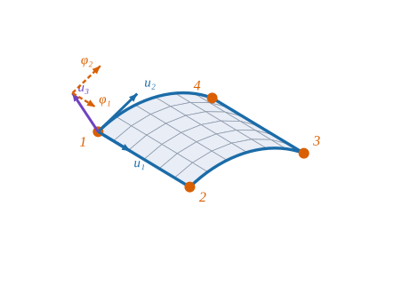

Interpolación sobre la superficie, cinco grados de libertad por nodo y área del elemento

Figura 24.1: El elemento de lámina de cuatro nodos sobre una superficie curva (azul). En el nodo 1: los tres desplazamientos \(u_1,u_2\) (tangentes, azul) y \(u_3\) (normal, violeta) y los dos giros \(\varphi_1,\varphi_2\) del director (naranja discontinuo). Los otros nodos tienen los mismos cinco. Esquema ilustrativo sobre un cilindro, con geometría calculada.
Cómo se puede describir el movimiento de un trozo de lámina curva con sólo veinte números
Objetivos y prerrequisitos
Objetivos. Al terminar el tema sabrás:
colocar un elemento de cuatro nodos en el plano paramétrico\((\theta^1,\theta^2)\) y pasar a coordenadas naturales\((\xi,\eta)\);
decir cuáles son los cinco grados de libertad de cada nodo y qué mide cada uno;
interpolar desplazamientos y giros con \(N_k=\tfrac14(1+\xi_k\xi)(1+\eta_k\eta)\);
calcular el área del elemento sobre la superficie y el vector de grados de libertad (\(20\times1\));
explicar por qué los movimientos rígidos sólo se reproducen aproximadamente.
desplazamiento: componentes covariantes tangentes y componente normal
\(\varphi_1,\varphi_2\)
componentes covariantes del giro del director (convenio pendiente de confirmar, ver el cuadro de abajo)
\(\boldsymbol\delta\)
vector de los \(20\) g.d.l. del elemento
AdvertenciaConvenio por confirmar
En este libro los g.d.l. son componentes covariantes (no físicas) y los giros \(\varphi_\alpha\) son las componentes covariantes del giro del director (tema D5). Si se prefieren g.d.l. físicos (por ejemplo, componentes cartesianas), las matrices cambian sólo por una matriz de transformación en cada nodo. El autor aún no ha fijado este convenio: se adopta la elección más sencilla y se marca «por confirmar».
NotaExplicación para ingenieros: ¿por qué cinco y no seis?
En el espacio, un punto de un sólido rígido tiene seis g.d.l.: tres traslaciones y tres giros. En una lámina de Reissner–Mindlin el material «director» (el segmento que atraviesa el espesor) puede inclinarse en dos direcciones — eso son los dos giros \(\varphi_1,\varphi_2\) — pero girar sobre sí mismo (el sexto grado) no cambia nada de la lámina: un lápiz dado vueltas sobre su eje sigue en el mismo sitio. Por eso la formulación tiene tres traslaciones y dos giros, cinco en total. Cuatro nodos por cinco: veinte incógnitas por elemento.
24.1 El elemento en el plano paramétrico
Se divide la superficie media \(\mathbf r(\theta^1,\theta^2)\) con una malla de rectángulos del plano \((\theta^1,\theta^2)\): cada elemento es un rectángulo \([\bar\theta^1\pm\theta^1_0]\times[\bar\theta^2\pm\theta^2_0]\) en el plano de parámetros, que se ve curvo y distorsionado al llevarlo a la superficie (Figura 24.1). Las coordenadas naturales son
y la jacobiana entre ambos sistemas es diagonal y constante: \(\partial\xi/\partial\theta^1=1/\theta^1_0\), \(\partial\eta/\partial\theta^2=1/\theta^2_0\). Es un caso mucho más sencillo que el cuadrilátero arbitrario de E2: toda la distorsión geométrica está dentro de la métrica\(a_{\alpha\beta}(\theta)\), que ya sabemos calcular (tema C1). Los nodos se numeran en sentido antihorario: \(1=(-1,-1)\), \(2=(1,-1)\), \(3=(1,1)\), \(4=(-1,1)\).
24.2 Cinco grados de libertad
Definición 24.1 (Grados de libertad de un nodo) En cada nodo se toman \[
\mathbf d_k=(u_1,\ u_2,\ u_3,\ \varphi_1,\ \varphi_2)_k,
\] donde el desplazamiento de la superficie media es \(\mathbf u=u_\alpha\,\mathbf a^\alpha+u_3\,\hat{\mathbf n}\) y el giro del director es \(\boldsymbol\vartheta=\varphi_\alpha\,\mathbf a^\alpha\) (tema D5). El vector del elemento es \(\boldsymbol\delta=(\mathbf d_1,\mathbf d_2,\mathbf d_3,\mathbf d_4)\in\mathbb R^{20}\).
El orden nodo a nodo facilita el ensamblaje (E9): los g.d.l. del nodo \(n\) son los de la posición \(5(n-1)+1,\dots,5n\) del vector global.
24.3 Interpolación
Las incógnitas se interpolan con las mismas funciones bilineales de E2, componente a componente:
Las derivadas con respecto a las coordenadas curvilíneas se obtienen con la jacobiana constante: \(\partial N_k/\partial\theta^1=N_{k,\xi}/\theta^1_0\), y análogamente para \(\theta^2\). Ya se pueden construir las deformaciones del tema D6 con las incógnitas interpoladas: es el contenido de E4.
AdvertenciaUn matiz importante sobre los movimientos rígidos
Se interpolan componentes covariantes, que dependen del punto de la superficie: una traslación rígida del cilindro en la dirección \(z\) tiene \(u_2=-R\sin\varphi\) y \(u_3=\cos\varphi\) en cada nodo, y la interpolación bilineal de estas funciones no reproduce exactamente la traslación. El elemento sólo es capaz de moverse sin deformarse en el límite de elementos pequeños (excepto en direcciones en las que los componentes son constantes, como la traslación axial del cilindro). La práctica lo cuantifica.
24.4 Área del elemento
El área del elemento sobre la superficie es el factor de área \(\sqrt a=\sqrt{\det a_{\alpha\beta}}\) del tema C1, integrado en el rectángulo paramétrico:
Ejemplo 24.1 (Ejemplo resuelto: elemento sobre un cilindro) Cilindro de radio \(R=500\) mm con \(\mathbf r=(\theta^1,\,R\sin\theta^2,\,R\cos\theta^2)\) (\(\theta^1\) a lo largo del eje). Elemento con \(\Delta\theta^1=100\) mm y \(\Delta\theta^2=0{,}1\) rad. La métrica es \(a_{11}=1\), \(a_{22}=R^2\), \(a_{12}=0\), de modo que \(\sqrt a=R\) es constante y \[
A_e=\theta^1_0\theta^2_0\cdot4\cdot R=\Delta\theta^1\,\Delta\theta^2\,R=100\cdot0{,}1\cdot500=\mathbf{5000}\ \text{mm}^2,
\] que coincide con el área del rectángulo desarrollado (\(100\times R\Delta\theta^2=100\times50\) mm). Resultado analítico.
En el Ejemplo 24.1, ¿cuánto vale el área del elemento de \(100\) mm de longitud axial y \(0{,}1\) rad de abertura sobre un cilindro de radio \(500\) mm?
Un elemento de lámina de cuatro nodos con cinco g.d.l. por nodo tiene…
12 g.d.l. (tres por nodo)
16 g.d.l.
20 g.d.l.
24 g.d.l. (seis por nodo)
\(4\times5=20\): tres desplazamientos y dos giros del director por nodo; el giro sobre la normal no se incluye.
TipAplicación real: del hypar de hormigón a la pared de una arteria
ilustrativoObra civil. Las cubiertas de Félix Candela y las del Oceanogràfic de Valencia son láminas de doble curvatura de pocos centímetros de espesor: justo el rango donde un elemento de lámina como este, con cortante transversal, es la herramienta adecuada. Biomecánica. Los primeros modelos de aneurismas aórticos se hicieron con elementos de lámina asumiendo tensión uniforme en el espesor, y la cavidad craneal se ha modelado como una estructura de pared delgada con elementos de lámina compuestos.
En 1970, Ahmad, Irons y Zienkiewicz publicaron Analysis of thick and thin shell structures by curved finite elements, donde obtenían el elemento de lámina «degenerando» un sólido tridimensional: se parte de un elemento 3D con nodos en las caras superior e inferior y se fuerza a que las secciones normales a la superficie media se mantengan rectas. Una versión previa, de 1968, se presentó en una conferencia sobre métodos matriciales en mecánica estructural. Esta formulación domina hoy los programas comerciales por no depender de ninguna teoría concreta de láminas; el elemento de este libro, en cambio, parte de la teoría de láminas en coordenadas curvilíneas arbitrarias (temas D3–D6).
calculado (1) El área del elemento del Ejemplo 24.1 con punto_elemento. (2) Cuánto «cuesta» el movimiento rígido en \(z\) sobre el cilindro al reducir el tamaño del elemento: se evalúa \(\lVert\mathbf K\boldsymbol\delta\rVert/\lVert\mathbf K\rVert\lVert\boldsymbol\delta\rVert\) con \(\boldsymbol\delta\) la traslación rígida interpolada nodo a nodo.
usingGeometria, LinearAlgebraR =500.0r = θ -> [θ[1], R *sin(θ[2]), R *cos(θ[2])] # cilindro de eje xX = [0.0100.0100.00.0; 0.00.00.10.1] # (θ¹, θ²) de los nodos 1–4# Área: Σ w·dA con los 2×2 puntos de Gaussárea =sum(w *punto_elemento(r, X, ξ, η, 1.0, 0.3, 1.0)[4] for (ξ, η, w) in Geometria.puntos_gauss((-1.0, 1.0), (-1.0, 1.0), 2))(área_elemento = área, esperada =100* R *0.1)
# Traslación rígida en z: componentes covariantes de u = (0,0,1) en cada nodofunctionresiduo_rigido(Δφ) X = [0.0100.0100.00.0; 0.00.0 Δφ Δφ] K =rigidez_elemento(r, X, 210e3, 0.3, 5.0; modo =:subdominios) δ =zeros(20)for k in1:4 g =geometria_punto(r, X[:, k]); u = [0.0, 0.0, 1.0] δ[5(k-1)+1:5(k-1)+2] = g.A'* u # uα = u·aα δ[5(k-1)+3] =dot(g.n, u)endnorm(K * δ) / (norm(K) *norm(δ))end[(Δφ = Δφ, residuo =residuo_rigido(Δφ)) for Δφ in (0.4, 0.2, 0.1, 0.05)]
El residuo disminuye al reducir el elemento (la traslación rígida se representa cada vez mejor); por eso, en un cálculo real, el modo rígido sólo aparece «gratis» cuando la malla es fina.
24.7 Ejercicios
Orden de los nodos. ¿Qué ocurre si se numeran los nodos en sentido horario?
NotaSolución
La jacobiana \(\partial(\xi,\eta)/\partial(\theta^1,\theta^2)\) cambia de signo y el «área» sale negativa: el elemento se vuelve del revés. Siempre antihorario visto desde el lado de la normal \(\hat{\mathbf n}\).
Contar incógnitas. Una malla de \(10\times10\) elementos tiene cuántos nodos y cuántos g.d.l. globales (sin apoyos)?
Área sobre una esfera. Un elemento de una esfera de radio \(R\) entre colatitudes \(\theta^1_a,\theta^1_b\) y longitudes \(\Delta\theta^2\) tiene \(\sqrt a=R^2\sin\theta^1\). Escribe su área.
NotaSolución
\(A=R^2\Delta\theta^2(\cos\theta^1_a-\cos\theta^1_b)\); en este caso \(\sqrt a\)no es constante y los \(2\times2\) puntos de Gauss ya sólo aproximan.
La doy por superada si…
Describo el elemento como un rectángulo del plano paramétrico y paso a \((\xi,\eta)\).
Enumero los cinco g.d.l. de un nodo y digo por qué no hay un sexto.
Escribo la interpolación ecuación 24.2 y la numeración nodo a nodo.
Calculo el área de un elemento con \(\sqrt a\).
Sé por qué el movimiento rígido sólo se representa en el límite.
Qué queda pendiente. El convenio de g.d.l. covariantes y de los giros \(\varphi_\alpha\)por confirmar por el autor; la nota histórica se basa en fuentes secundarias; revisión visual de la figura; la «Aplicación real» cita fuentes sin haber leído los artículos completos.
Ahmad, S., B. M. Irons, y O. C. Zienkiewicz. 1970. «Analysis of thick and thin shell structures by curved finite elements». International Journal for Numerical Methods in Engineering 2 (3): 419-51. https://doi.org/10.1002/nme.1620020310.
Bathe, K. J. 1996. Finite Element Procedures. Prentice Hall.
Zienkiewicz, O. C., y R. L. Taylor. s. f. The Finite Element Method. Butterworth-Heinemann.
Referencias
Son las mismas que aparecen en el margen, junto al texto.
Ahmad, S., B. M. Irons, y O. C. Zienkiewicz. 1970. «Analysis of thick and thin shell structures by curved finite elements». International Journal for Numerical Methods in Engineering 2 (3): 419-51. https://doi.org/10.1002/nme.1620020310.
Bathe, K. J. 1996. Finite Element Procedures. Prentice Hall.
Zienkiewicz, O. C., y R. L. Taylor. s. f. The Finite Element Method. Butterworth-Heinemann.